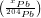
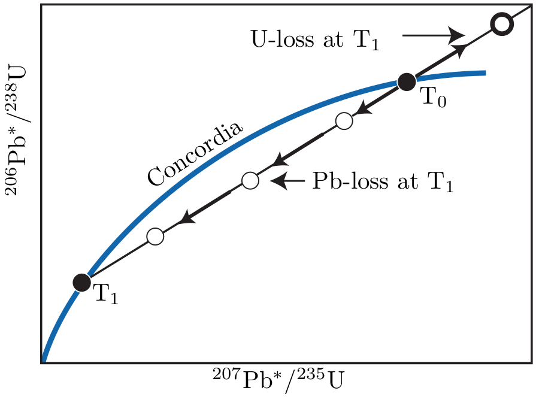

U and Th are found on the extremely heavy end of the Periodic Table of Elements. All their isotopes are radioactive and exhibit α-decay and sometimes even spontaneous fission (see Section 7.2). 232Th, 235U and 238U each form the start of long decay series comprising multiple α- and β emissions which eventually produce various isotopes of Pb:
|
| (5.1) |
Each of these three decay series is unique, i.e. no isotope occurs in more than one series (Figure 2.2). Furthermore, the half life of the parent isotope is much longer than any of the intermediary daughter isotopes, thus fulfilling the requirements for secular equilibrium (Section 2.4). We can therefore assume that the 206Pb is directly formed by the 238U, the 207Pb from the 235U and the 208Pb from the 232Th. Several chronometers are based on the α-decay of U and Th:
Natural Pb consists of four isotopes 204Pb, 206Pb, 207Pb and 208Pb. The ingrowth equations for the three radiogenic Pb isotopes are given by:
|
| (5.2) |
With λ238 = 1.55125 ×10-10a-1 (t1∕2 = 4.468 Gyr), λ235 = 9.8485 ×10-10a-1 (t1∕2 = 703.8 Myr), and λ232 = 0.495 ×10-10a-1 (t1∕2 = 14.05 Gyr). The corresponding age equations are:
|
| (5.3) |
Some igneous minerals (notably zircon) conveniently incorporate lots of U and virtually no Pb upon crystallisation. For those minerals, the non-radiogenic Pb can be safely neglected (at least for relatively young ages), so that we can assume that Pb ≈ Pb*. This assumption cannot be made for other minerals, young ages, and high precision geochronology. In those cases, the inherited component (aka ‘common Pb’) needs to be quantified, which is done by normalising to non-radiogenic 204Pb:
|
| (5.4) |
where ∘ stands for the common Pb component for isotope x. The corresponding age equations then become:
|
| (5.5) |
U-Pb dating grants access to two separate geochronometers (206Pb/238U and 207Pb/235U) based on different isotopes of the same parent-daughter pair (i.e. U & Pb). This built-in redundancy provides a powerful internal quality check which makes the method arguably the most robust and reliable dating technique in the geological toolbox. The initial Pb composition can either be determined by analysing the Pb composition of a U-poor mineral (e.g., galena or feldspar) or by applying the isochron method to samples with different U and Th concentrations. As is the case for any isotopic system, the system needs to remain ‘closed’ in order to yield meaningful isotopic ages. This sometimes is not the case, resulting in a loss of Pb and/or U. Such losses cause the 206Pb/238U- and 207Pb/235U-clocks to yield different ages. Note that isotopic closure is required for all intermediary isotopes as well. Critical isotopes are the highly volatile 226Rn (t1∕2=1.6ka) and 222Rn (t1∕2=3.8d). Initially, the U-Pb method was applied to U-ores, but nowadays it is predominantly applied to accessory minerals such zircon and, to a lesser extent, apatite, monazite and allanite.
The 207Pb/206Pb method is based on the U-Pb method and is obtained by dividing the two U-Pb members of Equation 5.2 (or 5.4), and taking into account that the average natural 238U/235U-ratio is 137.818:
|
| (5.6) |
The left hand side of this equation contains only Pb isotopic ratios. Note that these are only a function of time. Equations 5.6 has no direct solution and must be solved iteratively. The Pb-Pb method has the following advantages over conventional U-Pb dating:
In practice, the Pb-Pb method is rarely applied by itself but is generally combined with the U-Pb technique. The expected (207Pb∕206Pb)*-ratio for recently formed rocks and minerals can be calculated from Equation 5.6 by setting t→0:
|
| (5.7) |
This ratio was progressively higher as one goes back further in time. It was ≈ 0.6 during the formation of Earth.
It sometimes happens that the U-Th-Pb trio of chronometers does not yield mutually consistent ages. It is then generally found that t208 < t206 < t207 < t207∕206 which, again, shows that the Pb-Pb clock is least sensitive to open system behaviour. From Equation 5.2, we find that:
|
| (5.8) |
If we plot those 206Pb*/238U- and 207Pb*/235U-ratios which yield the same ages (t) against one another, they form a so-called ‘concordia’ curve. The concordia diagram is a very useful tool for investigating and interpreting disruptions of the U-Pb system caused by ‘episodic lead loss’. This means that a mineral (of age T∘, say) has lost a certain percentage of its radiogenic Pb at a time T1 after its formation (e.g., during metamorphism), after which the system closes again and further accumulation of radiogenic Pb proceeds normally until the present. On the concordia diagram of multiple aliquots of a sample, this scenario will manifest itself as a linear array of datapoints connecting the concordant 206Pb*/238U - 207Pb*/235U composition expected at T∘ with that expected at T1. With time, the data shift further away from the origin. The upper intercept of the linear array (aka discordia line) can be used to estimate the crystallisation age, whereas the lower intercept yields the age of metamorphism. The greater the distance from the expected composition at t, the greater the degree of Pb loss and the greater the linear extrapolation error on the crystallisation age (Figure 5.1).

Zircon (ZrSiO4) is a common U-Th-bearing accessory mineral in acidic
igneous rocks, which form the main proto-sources of the siliciclastic
sediments. Zircon is a very durable mineral that undergoes minimal
chemical alteration or mechanical abrasion. Therefore, zircon crystals can
be considered time capsules carrying the igneous and metamorphic history
of their proto-sources. The probability distribution of a representative
sample of zircon U-Pb ages from a detrital population can serve as a
characteristic fingerprint that may be used to trace the flow of sand through
sediment routing systems. As a provenance tracer, zircon U-Pb data are less
susceptible to winnowing effects than conventional petrographic techniques.
Using modern microprobe technology (SIMS and LA-ICP-MS, see Chapter
3.1), it is quite easy to date, say, a hundred grains of zircon in a matter
of just a few hours. Due to the robustness of zircons as a tracer
of sedimentary provenance, and the relative ease of dating them,
the use of detrital zircon U-Pb geochronology has truly exploded
in recent years. A literature survey using the keywords ‘detrital’,
‘zircon’, and ‘provenance’ indicates that the proliferation of detrital
zircon studies has followed an exponential trend, with the number of
publications doubling roughly every five years over the past two decades. At
present, nearly a thousand detrital zircon publications appear each
year.
An extensive survey of late Archaean sandstones from the Jack Hills in Australia have revealed a subpopulation of detrital zircons with Hadean (4.1-4.2 Ga) U-Pb ages. These are the oldest terrestrial minerals known to science, predating the oldest igneous rocks by 300 million years. The isotopic composition of oxygen, hafnium and other elements in the zircon represents a unique window into the earliest stages of Earth evolution. They indicate that liquid water was present on the surface of our planet early on in its history. This isotopic evidence is corroborated by the geological observation that the Hadean zircons are preserved in fluvial deposits.